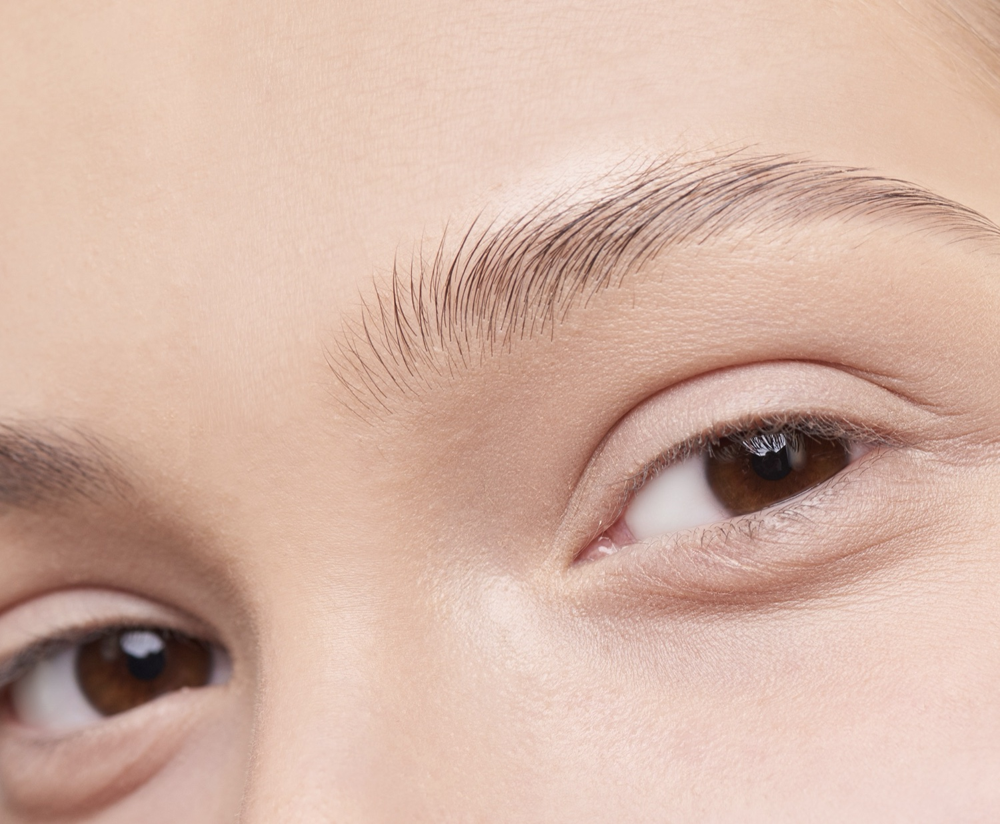
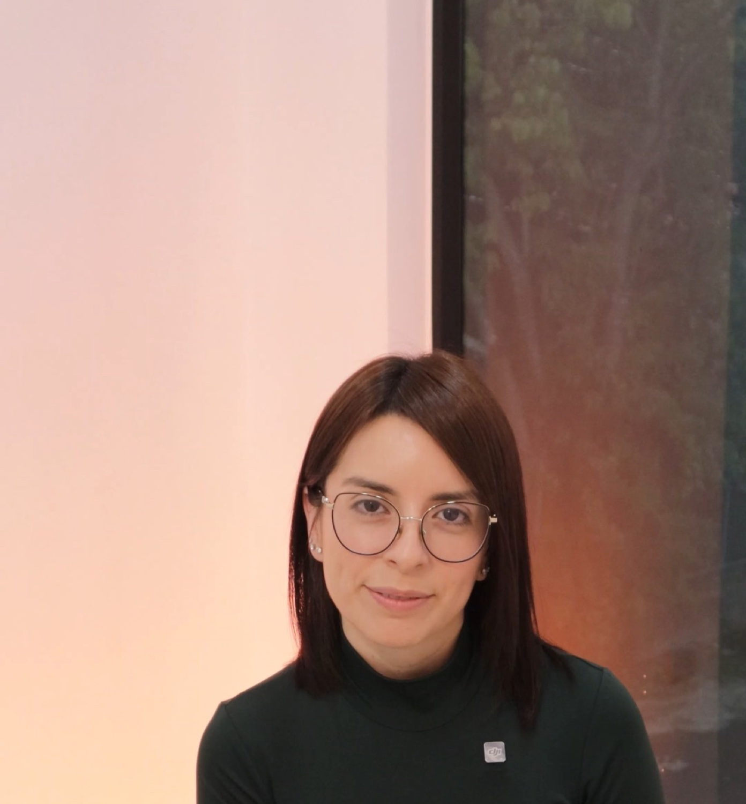
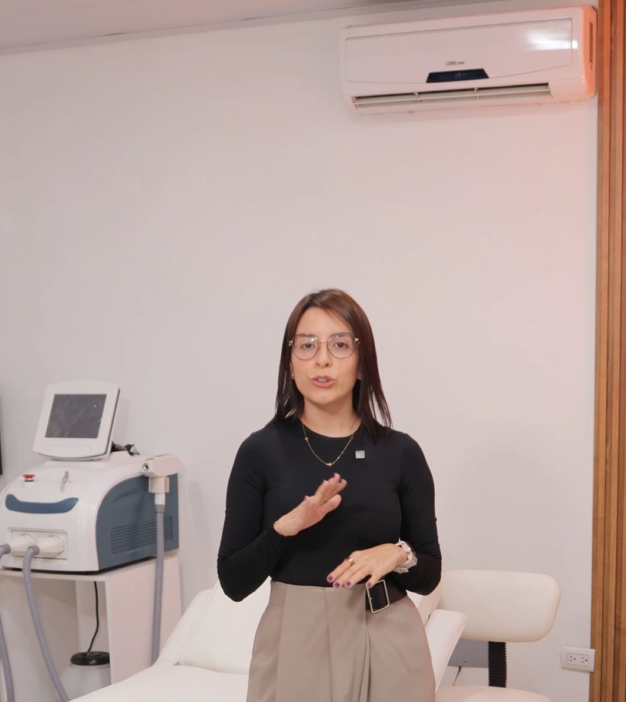
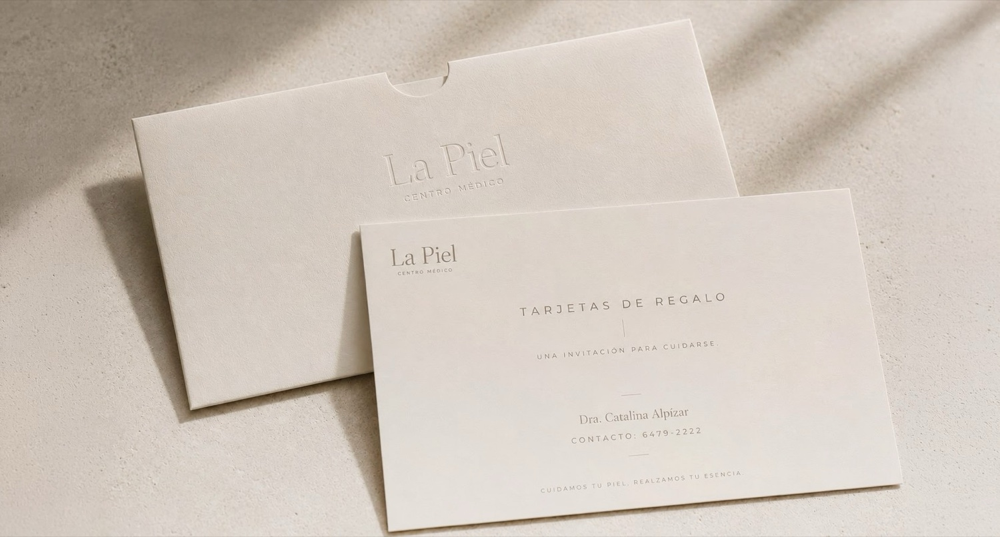
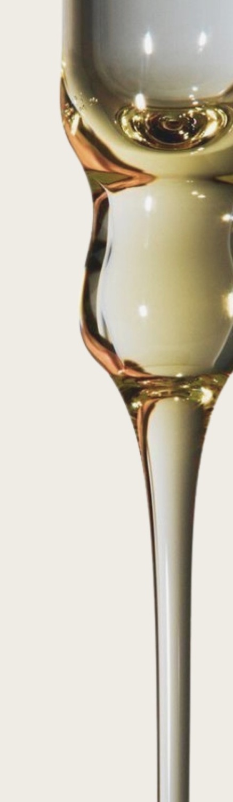

Ciencia
Cada plan nace de una valoración médica: anatomía facial, proporciones, calidad de la piel y dinámica muscular.
Medicina estética y regenerativa · Belén, Heredia
Deslizá
Nuestra manera de ver la piel
No necesitás más tratamientos. Necesitás saber cuál es el correcto para vos.
Cada plan nace de una valoración médica: anatomía facial, proporciones, calidad de la piel y dinámica muscular.
No se trata de corregir cada detalle, sino de entender qué puede aportar realmente a tu rostro.

Realzar tu belleza, sin perder tu esencia. Decimos no a la sobrecorrección.

Medicina estética y regenerativa
Antes de pensar en cualquier procedimiento, lo más importante es entender qué necesita realmente tu rostro.
Analizamos tus facciones, la calidad de tu piel, tus proporciones y tus objetivos para construir un plan a tu medida, siempre respetando tus rasgos.
Conversemos sobre tu pielSaber cuándo intervenir es tan importante como saber cuándo no hacerlo.
Tratamientos faciales, corporales y capilares con un mismo enfoque: naturalidad, calidad de la piel y atención personalizada. Conocé las alternativas; la recomendación final siempre depende de tu valoración médica.
Si no sabés qué necesitás, empezá por aquí. Estas opciones orientan: no son un diagnóstico.
Ninguna opción es mejor para todas las personas. Estas son las diferencias generales.
En medicina estética, muchas veces el mejor resultado es aquel que nadie nota…
pero todos perciben.
01
En unos 45 minutos revisamos tus antecedentes, tus objetivos, los riesgos y las alternativas.
₡50 000Consulta de valoración
02
No todas las pieles necesitan lo mismo. Definimos el protocolo adecuado para tu caso, sin hacer de más.
03
Cada aplicación se planifica de forma personalizada, con seguimiento profesional durante el proceso.


Regalá una experiencia enfocada en el bienestar y el cuidado de la piel, siempre respaldada por criterio médico.

Tienda · Próximamente
Los productos que la doctora recomienda, con pago en línea o por SINPE Móvil, conectados al inventario de la clínica.
Lunes a viernes: 9:00 a. m. a 7:00 p. m.
Sábados: 9:00 a. m. a 3:00 p. m.
Domingos: cerrado
Atención con cita previa.
Parqueo privado y bajo techo.
Podés venir con hasta dos acompañantes.
Atendemos a hombres, mujeres y pacientes internacionales.
La información de este sitio es educativa y no sustituye una valoración médica. El diagnóstico, las indicaciones y el protocolo de cada paciente los determina la Dra. Catalina Alpízar Madrigal.
Plaza Manantial · Belén, Heredia